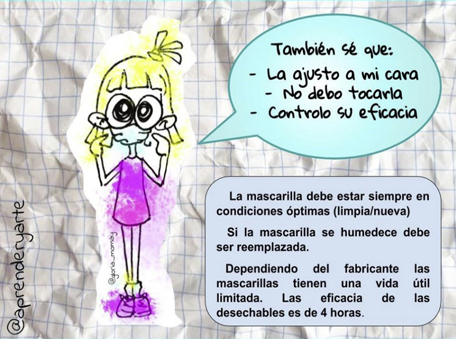
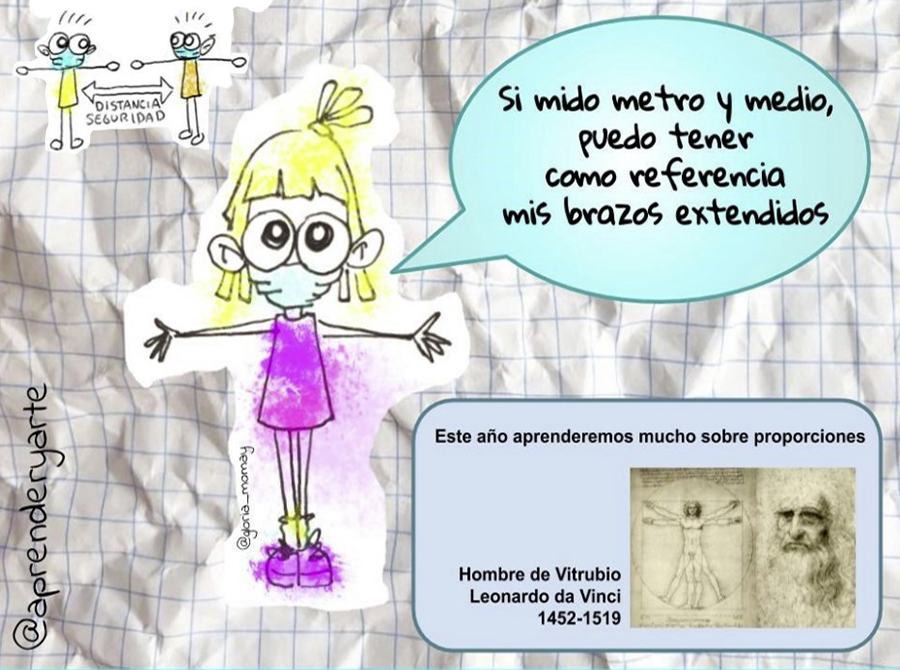
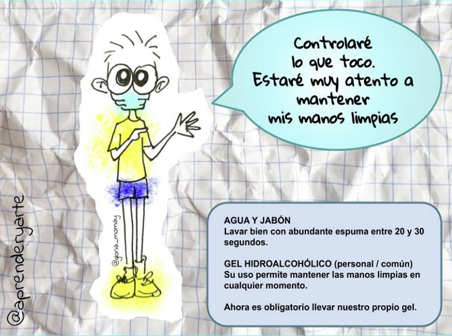
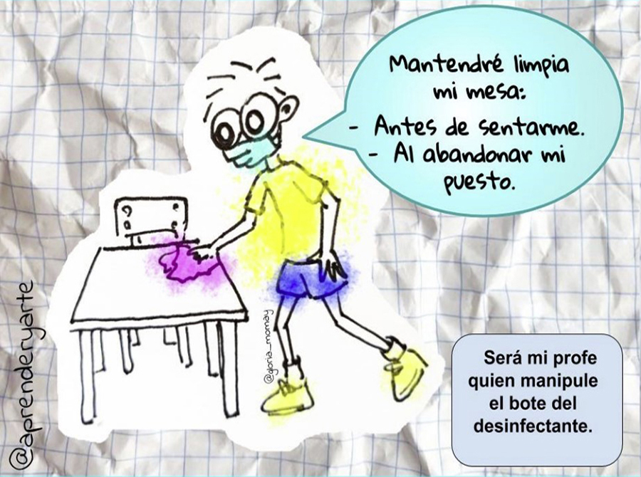
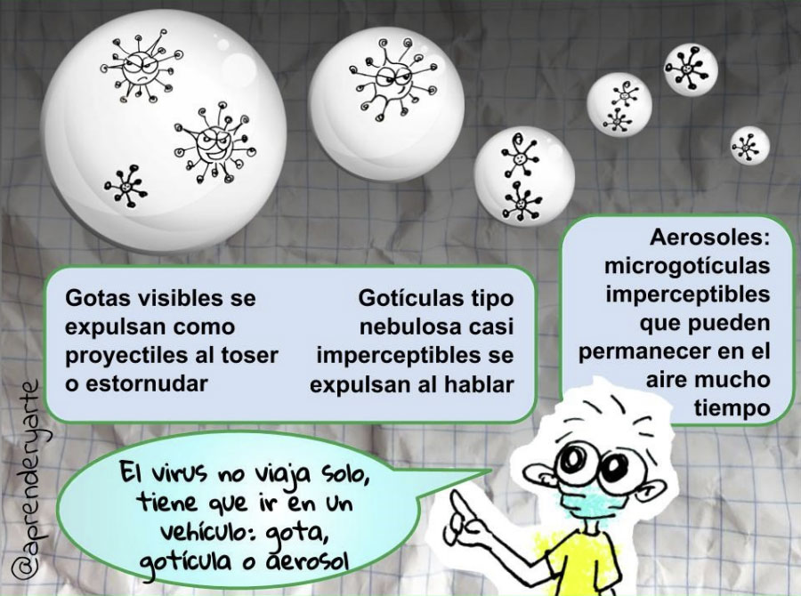
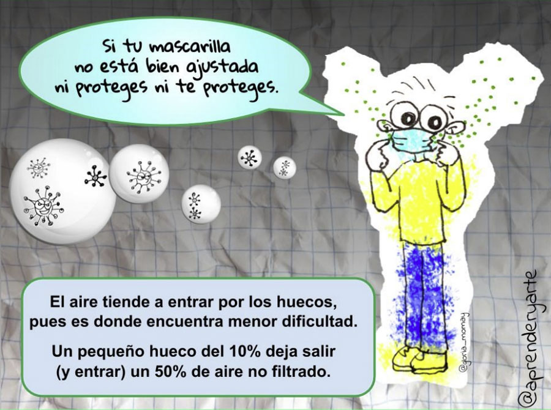
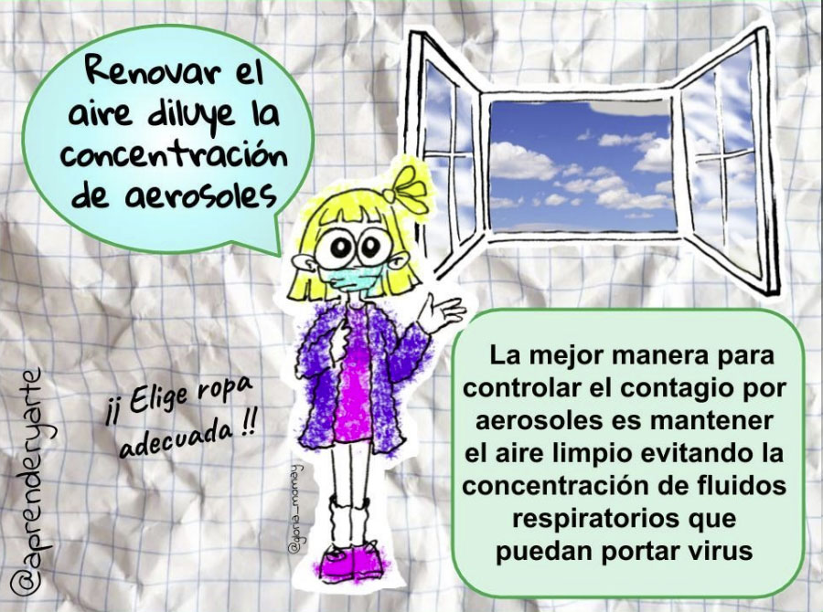
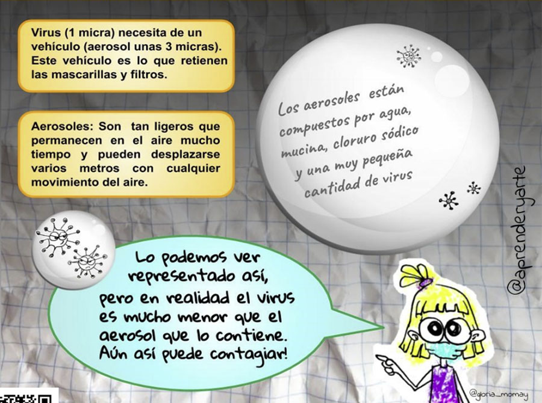
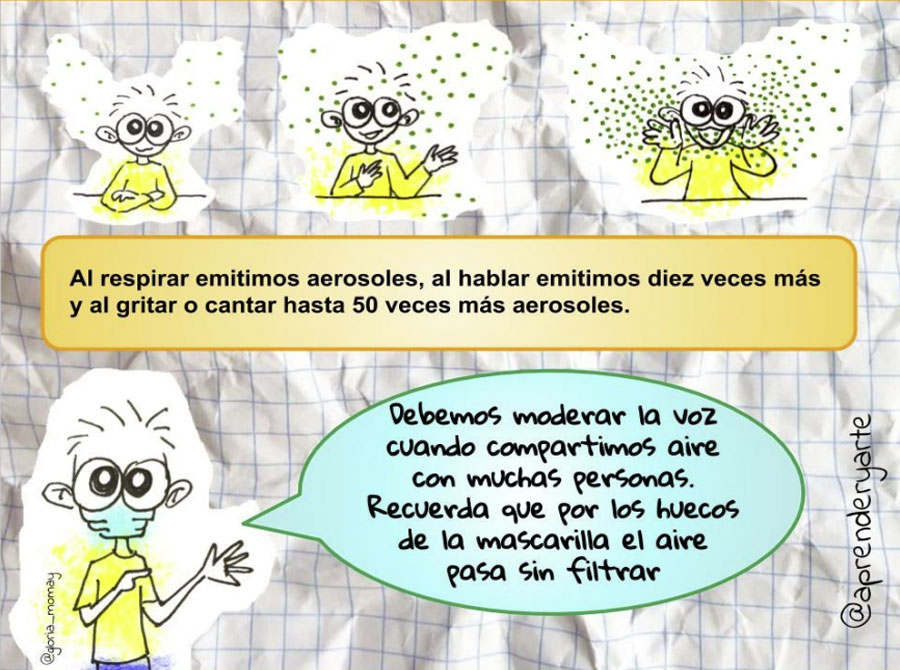

1/4
Mascarilla bien puesta
MASCARILLA SANITARIA: No es un EPI. Retiene las gotitas que expulsamos al
hablar. Con ella protegemos a los demás y los demás nos protegen a nosotros.
Las FFP2 tienen mayor capacidad de protección pues sí son EPIs (Equipo de
Protección Individual)

2/4
Mantener la distancia de seguridad
DISTANCIA SOCIAL: Si nos alejamos de focos infecciosos será más difícil
contagiarnos. Las gotas más pequeñas que producimos al hablar pueden llegar
más lejos, la distancia de 1,5 / 2m impiden que esas gotículas alcancen
nuestras mucosas.

3/4
Manos siempre limpias
LAVADO DE MANOS Y SUPERFICIES: El jabón y el gel hidroalcohólico rompen
la cápsula grasa que recubre el virus destruyéndolo.

4/4
Mi mesa simpre limpia
Manteniendo superficies y manos limpias nos aseguramos de no
contagiarnos a través de fómites (gotitas contenedoras del virus activo que se depositan
en superficies y contagian por contacto, a través de las mucosas).

1/3
Goticulas y aerosoles
CONTAGIO POR AEROSOLES: Los últimos estudios apuntan a
una mayor probabilidad de contagio a través de aerosoles
que acaban concentrándose en espacios cerrados y
semicerrados. Los aerosoles son como el humo,
pero ni se ve ni se huele.

2/3
Huecos. Aerosoles sin filtrar
Los aerosoles son tan pequeños que pueden salir (o entrar) fácilmente por
los huecos de nuestras mascarillas. Son tan minúsculos y ligeros que
permanecen flotando en el aire durante horas y pueden desplazarse
varios metros.

3/3
Ventilación abundante y constante
Nuestra gran aliada es la VENTILACIÓN.
Abriendo ventanas y ventilando diluimos esas concentraciones de
aerosoles potencialmente contagiosos, minimizando riesgos.

1/3
¿Qué son los aerosoles?
Al respirar exhalamos fluidos respiratorios en forma de gotas,
gotículas y aerosoles potencialmente contagiosos,
también expulsamos CO2, que es un gas.
Los aerosoles son partículas tan pequeñas y ligeras que escapan
fácilmente por los huecos de nuestras mascarillas y se mantienen
suspendidas en el aire.

2/3
¿Cuántos aerosoles exhalamos?
Al respirar emitimos aerosoles, al hablar emitimos diez veces más y al
gritar o cantar hasta 50 veces más aerosoles. Estos aerosoles acaban
concentrándose peligrosamente en espacios cerrados o semicerrados
con poca ventilación.

3/3
Aerosoles y CO2
Las concentraciones de CO2 y, por consiguiente, de aerosoles se
diluyen fácilmente con una ventilación adecuada.
Midiendo el nivel del CO2 podemos saber cuánta cantidad de aerosoles
hay en nuestro aula y en qué momento debemos renovar el aire.